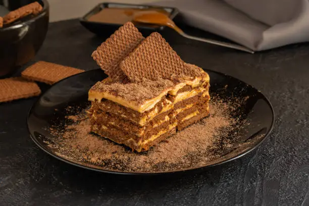

Chocotorta
La chocotorta es un postre tradicional argentino, sencillo de preparar y con un sabor espectacular gracias a la combinación de chocolinas, dulce de leche y queso crema.
Ingredientes
- 2 paquetes de chocolinas
- 400 g de dulce de leche
- 400 g de queso crema
- Leche para remojar las galletitas
- Cacao en polvo (opcional)
Preparación
- Mezclar el dulce de leche con el queso crema hasta que quede homogéneo.
- Remojar las chocolinas en leche rápidamente y colocarlas en una fuente.
- Agregar una capa de la mezcla, luego otra capa de galletitas y repetir el proceso.
- Finalizar con crema por encima y espolvorear con cacao.
- Refrigerar por al menos 4 horas antes de servir.